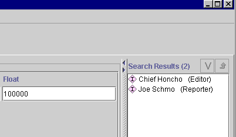

Creating and Saving a Query
Creating and Saving a Query

The Queries tab allows you to query your project and locate all instances
that match criteria you specify. To create a query, you must select one or more
classes, and one or more slots within that class. You can also save queries in
the Query Library for future recall.
In this section, you will:
- Create a query.
- Run the query and view the results.
- Save the query.
- Retrieve the query and rerun it.
Creating a Query
Suppose you are interested in locating all Employees who who have a salary
greater than $40,000 dollars a year. To create the query:
- Click on the Queries tab.

- First, click the Select Class
 button above the Class entry bar.
button above the Class entry bar.
- Select Employee from the Select Classes dialog box, then click OK.
Employee is now displayed in the Class entry bar.
- With Employee showing in the Class entry bar, click the Select Slot
button above the Slot entry bar.
- Select Salary from the Select Slot dialog box and click OK.
- The menu to the right of the Slot entry bar is now active, and the entry
bar at the far right of the window reminds you that the slot you have
selected is a float. Select "is greater than" from the
menu. Next, enter 100000 in the Float entry bar.
Running the Query
Now you have set up your query, you can run it and view the results.
- To run the query, first click the Find button near the bottom right of the
window.
- The results are shown in the Search Results window at the far right. If
you cannot see the results, you may need to enlarge your window or move the
slider bar.

You can double-click on any instance to view details.
Saving the Query
You can save any query before or after you run it. To save the query in the
Query Library:
- Click the Add to Query Library
 button at the lower right of the
screen.
button at the lower right of the
screen.
- Type sample_query in the Input Query Name dialog box.
- Click OK.
Retrieving the Query
To retrieve a saved query, you can select it from the Query Library. To do
this:
- First, click the Clear button to empty the screen, so that you can see the
query operation.
- Select the query in the Query Library at the bottom of the screen. If you
cannot see the Query Library, you may need to enlarge your window or move
the slider bar.
- Click the Retrieve Query
 button to retrieve the query.
button to retrieve the query.
-
The saved query is now displayed at the top of the window. If you wish, you can now alter
it or combine it with another saved query.
- Click the Find button.
Getting Started With Protégé